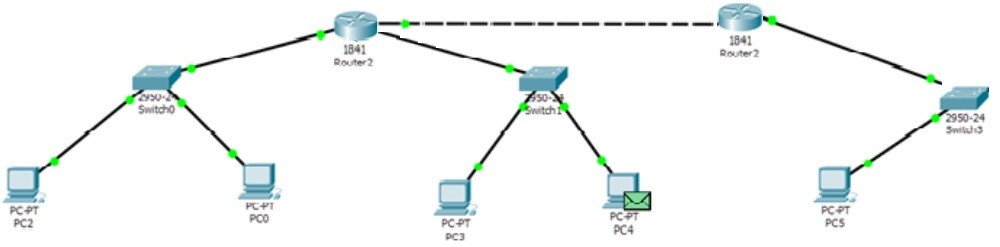
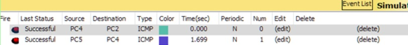

Студент группы
ИДМ-17-06
Лабораторная работа №1
Экосистема разработки программ с открытым кодом
Создана личная страница студента с использованием html/css. Произведена работа с git и github.
Лабораторная работа №2
Разработка простого веб-приложения
"Clock"
Ссылка на проект: и ссылка репозиторий
Лабораторная работа №3
Настройка локальной сети передачи данных
Работа в приложении Cisco Packet Tracer и Cisco IOS :

Пакеты передаются по всей сети

Подготовка к экзамену
Самооценка прохождения теста по инновациям, формулировка одного вопроса по теме "Интернет-технологии" в одной из форм, встречающихся в тесте. Презентации лекций и тесты расположены на Яндекс-Диске
Вопрос: Что такое каскадные таблицы стилей - CSS?
- CSS формальный язык описания внешнего вида документа, написанного с использованием языка разметки
- Преимущественно используется как средство описания оформления внешнего вида веб-страниц.
- написанных с помощью ящыков размтки HTML и XHTML, но может также применяться к любым XML - документам.
CSS - Википедия.